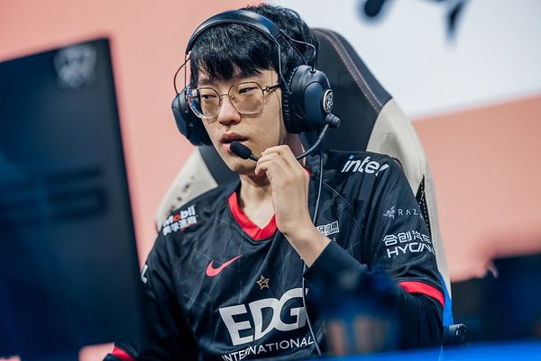
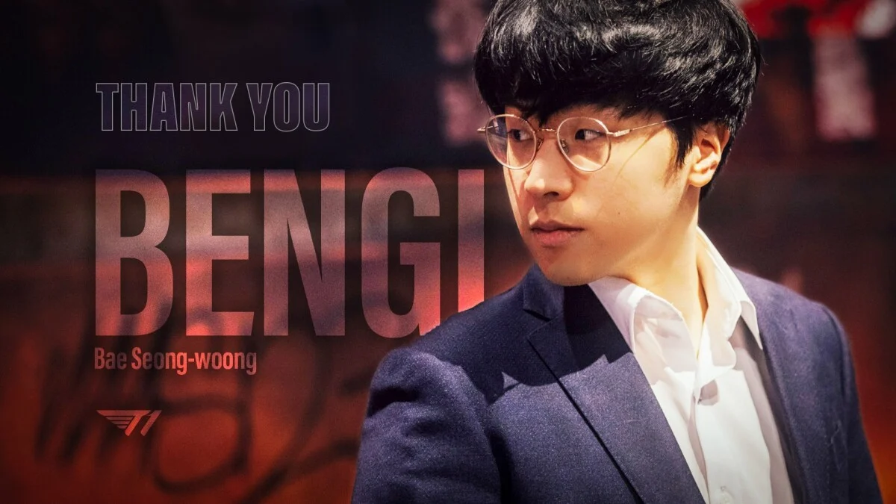

Últimas Noticias

League of Legends: EDward Gaming demanda a Scout por presunta violación contractual
El campeón del mundo 2021, Scout, enfrenta una demanda de su antiguo equipo, EDward Gaming (EDG), por supuestamente haber firmado con un equipo coreano en 2021, mientras aún estaba bajo contrato con EDG.
Leer más

League of Legends: El entrenador de T1 renuncia
Bae «Bengi» Seong-woong renunció como entrenador en jefe luego de un par de temporada a cargo del roster principal.
Leer más
Valorant: Se lanza un cuchillo exclusivo de China
Riot Games ha anunciado el lanzamiento de un nuevo cuchillo exclusivo para la región de China en su popular juego de disparos táctico, Valorant. El cuchillo, llamado "Ignite Fan", ha sido diseñado especialmente para los fanáticos chinos del juego y promete ser un objeto codiciado dentro de la comunidad.
Leer más